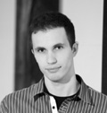
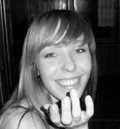

Taniec
Monika Spiżak

Trenuje taniec towarzyski od 8 lat. Swoje umiejętności szlifowała w Studiu Tańca NARCYZ w Krakowie. Zobyła międzynarodowe klasy taneczne biorąc udział w turniejach w całej Polsce, m.in. Mistrzostwa Polski w tańcach latynoamerykańckich. Nauka tańca sprawia jej ogromna radość, a jej marzeniem jest aby każdy jej uczeń pokochał taniec, tak jak ona.
Jako instruktor i choreograf specjalizuje się w odmianie Free Style - Disco Dance. Jej choreografie i występy taneczne sięgnęły po wiele tytułów mistrzowskich m.in. na Otwartych Mistrzostwach Strefy Zachodniej, Otwartych Mistrzostwach Polski Południowo-Wschodniej, Otwartych Mistrzostwach woj. Wielkopolskiego w Tańcu Dyskotekowym i Estradowym, Ogólnopolskim Festiwalu Tańca Nowoczesnego i Współczesnego, Otwartych Mistrzostwach Polski i wielu innych.
Ma głowę pełną pomysłów. Na swoim koncie posiada również wiele choreografii tematycznych i eventowych.
Prowadzi zajęcia: Taniec towarzyski Pierwszy taniec Free Style Latino Solo Erotic Dance
Prowadzi zajęcia: Taniec towarzyski Pierwszy taniec Free Style Latino Solo Erotic Dance
Maciej Strumiński

Pierwsze kroki taneczne stawiał w tarnobrzeskim klubie tańca SAMBA i od tamtej pory taniec stał się jego pasją. Sportowy taniec towarzyski trenował przez 10 lat w Studiu Tańca NARCYZ w Krakowie - osiągając w tym czasie liczne sukcesy na turniejach w Polsce i zagranicą.
Na swoich zajęciach zwraca uwagę nie tylko na ilość poznawanych kroków i figur tanecznych, ale przede wszystkim na jakość ich wykonania. W zajęcia wkłada całą swoją energię, zaangażowanie, a także szczyptę humoru, dzięki czemu treningi przebiegają w sympatycznej atmosferze. Jego potencjał i zaangażowanie jako instruktora to niewątpliwe atuty,
które przyciągają wielu zainteresowanych tańcem na prowadzone przez
niego zajęcia. Taniec to jego pasja, którą stara się zarażać wszystkich.
Prowadzi zajęcia: Taniec towarzyski Pierwszy taniec
Prowadzi zajęcia: Taniec towarzyski Pierwszy taniec
Svietlana Antoni

Jest absolwentką Szkoły Baletowej w Mińsku. Ukończyła prestiżową Moskiewską Akademię Teatralną GITIS. Tańczyła w Teatrze Opery Baletowej oraz pracowała jako pedagog i choreograf w Szkole Sztuki w Mińsku
Prowadzi zajęcia: Klasyka
Prowadzi zajęcia: Klasyka
Alicja Miszczor - Jobda
Alicja Miszczor-Jobda - Ur. w 1982r. Tancerka, imrprowizatorka, instruktorka tańca współczesnego, improwizacji w tańcu, gimnastyki i tańca dla seniorów, pilates taniec oraz relaksacji.
Absolwentka PPSKAK w Kaliszu (2008). Dyplomowana instruktorka improwizacji i symboliki ciała metodą Dr Detlefa Kapperta.
Stypendystka Alternatywnej Akademii Tańca w Poznaniu (2013) Tancerka "Eksperymentalnego Studia Tańca" u Iwony Olszowskiej.
Tańczyła i brała udział w licznych spektaklach tanecznych oraz projektach video tańca. Od 2014r. niezależnie związana z Teatrem Barakah w Krakowie poprzez projekt "Obszar tańca".
W 2014 tańczyła w spektaklu "Przeźroczystość" w choreografii I.Olszowskiej oraz zrealizowała autorskie solo taneczne "Zdjęcie".
Zanim poszła w kierunku tańca od dzieciństwa zajmowała się sztukami plastycznymi. Dlatego w tańcu wykorzystuje wyobraźnię, a obrazy traktuje jako inspirację dla ruchu.
Prowadzi zajęcia: Taniec Współczesny Body Conditioning
Prowadzi zajęcia: Taniec Współczesny Body Conditioning
Bartek Serowik

Tancerz, choreograf i wokalista, instruktor ds. upowszechniania teatru i tańca. Swoją przygodę z tańcem rozpoczął w wieku 5 lat. Swój warsztat doskonalił pod okiem uznanych polskich i zagranicznych specjalistów. Współpracował z wieloma ośrodkami kultury na terenie całej Polski jako instruktor tańca i śpiewu. Choreograf wielu zagranicznych projektów, laureat konkursów ogólnopolskich.Uczestniczył w wielu projektach telewizyjnych zarówno jako wokalista jak i choreograf min.:Piosenki Jacka Cygana w reżyserii Cezarego Domagały, choreografia dla programu TVP1 Lato z Jedynką. Założył i prowadzi Teatr Tańca Dekompresja. W ramach działalności teatru wyreżyserował i opracował choreografię do następujących spektakli:Barbara Zdunk Ostatnia Czarownica spektakl biograficzny,Szukam,Frag-men-ty,Sz....sz,Wychylenia,Jak powstała Europa,Lustro w lustrze,Iluzja,Baton Szokolatka Mix,Projekt 3/9 kwadrat,Rozpętanie oraz innych projektów tanecznych.Obecnie Teatr Tańca Dekompresja działa w Krakowie.
Współtworzył projekt muzyczny twórczości Bułata Okudżawy. Przygotowywał także choreografię i reżyserię wyborów Miss Polonia na szczeblu regionalnym, jak też choreografie pokazów mody. Współpracował z Warsztatami Terapii Zajęciowej, prowadził zajęcia treningu kompetencji społecznych w ramach programu Aktywności Lokalnej. Wykładowca Uniwersytetu Rzeszowskiego na kierunku choreografia, specjalizacja taniec współczesny. Spektakle, które tworzę powstają w oparciu o techniki tańca współczesnego.
W swoich choreografiach dużo miejsca poświęcam poszukiwaniu mechanizmów ruchu ciała, specyficznego abecadła ruchowego, będącego środkiem komunikacji w choreografii. Dużą wagę przywiązuję do znaczenia gestu, jego transformacji oraz jakości ruchu. Stawiam na indywidualność jednostki i staram się wydobyć z niej to co najlepsze i najbardziej wartościowe nie zatracając przy tym indywiduum tancerza. W swoje choreografie wkładam całą duszę i całego siebie.
Prowadzi zajęcia: Physical Dance
Prowadzi zajęcia: Physical Dance
Aleksander Kopański

Tancerz, choreograf, aktor. Absolwent Państwowej Szkoły Muzycznej oraz Leśnictwa na Uniwersytecie Rolniczym.
Przez 10 lat trenował akrobatykę sportową zdobywając mistrzowską klasę sportową.
W 2004 roku dołączył do zespołu Śląskiego Teatru Tańca w Bytomiu.
Jego debiut sceniczny miał miejsce w Indiach. Od tamtego czasu występował z teatrem w Kanadzie, Chinach, Wielkiej Brytanii, oraz krajach całej Europy.
Prowadził zajęcia z body conditioning oraz z tańca współczesnego w ramach Międzynarodowej Konferencji Tańca Współczesnego
i Festiwalu Sztuki Tanecznej w Bytomiu, jak również w ramach Studium Teatru Fizycznego powstałym przy ŚTT.
Systematycznie prowadzi warsztaty z tańca współczesnego w całej Polsce.
Posiada dyplom tancerza zawodowego, przyznawany przez Związek Artystów Scen Polskich,
oficjalnie honorowany przez Ministra Kultury i Dziedzictwa Narodowego.
Aktualnie współpracuje z Teatrem Słowackiego, Teatrem Polskim w Bielsku-Białej, Teatrem Kto i Operą Krakowską.
W teatrze Hothaus odpowiedzialny za stworzenie ruchu scenicznego do spektaklu "Proces" wg. Kafki, "Ferdydurke" i "Gra snów"
Prowadzi regularne zajęcia z młodzieżą licealną w ramach projektu innowacji tanecznej, której jest kierownikiem.
W ramach tej współpracy przygotowuje także spektakle dyplomowe.
Prowadzi zajęcia: Taniec Współczesny
Prowadzi zajęcia: Taniec Współczesny
Bernadeta Zwierowska

Aktualnie studentka Akademii Górniczo Hutniczej w Krakowie, tancerka zespołów baletowych Art Dance Company, Baletu Krakowskiej Akademii Tańca, Impression, instruktorka tańca pracująca z dziećmi i dorosłymi.
Naukę tańca rozpoczęła w wieku 7 lat w Studio Baletowym przy Operze Krakowskiej. Następnie kontynuowała edukację w Krakowskiej Akademii Tańca, której absolwentką została w 2007 roku. W roku 2008 ukończyła Instruktorski Kurs Kwalifikacyjny z Dziedziny Tańca Współczesnego, a w czerwcu 2009 zdała praktyczną część egzaminu dyplomu zawodowego tancerza przyznawanego przez Związek Artystów Scen Polskich.
Tańczyła w wielu spektaklach oraz etiudach tanecznych m.in. "Dziadek do Orzechów", "Obudź się - Minnesota blues", "Przez tę ziemię przeszedł Pan" festiwal Misteria Paschalia, "Pyza na polskich dróżkach", "Zazdrosna miłość", IX Krakowska Wiosna Baletowa "Od adepta do gwiazdy", "Opowieść o zwyczajnym szaleństwie", "Alicja po drugiej stronie lustra", "Wspomnienie", "Momenty", etiuda "The Bay", "Trzy kobiety", "Villa dei Misterii", "Chopiniana".
Uczestniczyła w warsztatach z różnych technik tańca w kraju i za granicą, Budapest Dance Theatre, Warsztatach Tańców Dworskich w Krakowie.
Prowadzi zajęcia: Modern Jazz Balet
Prowadzi zajęcia: Modern Jazz Balet
Monika Jarosz

nstruktorka jazzu, modernu, burleski. Swoją przygodę z tańcem rozpoczęła jako mała dziewczynka w Nowohuckim Centrum Kultury w Krakowie. Taniec z hobby przerodził się w pasję, w momencie kiedy Monika poznała technikę jazz, modern i współczesny .
Od tamtej pory rozwija intensywnie swoje umiejętności w tych stylach tanecznych. Burleska jest dla niej oderwaniem od schematów i szablonowości.
W 2013 roku Monika otrzymała z wyróżnieniem tytuł "Instruktora Rekreacji Ruchowej ze specjalizacją taniec jazzowy ", wydany przez Egurolla dance studio i Polską Akademię Sportu. Aktualnie członkini Open-minded Group i uczennica Krakowskiej Akademii Tańca L'art de la dance.
Prowadzi zajęcia: Burleska Burleska
Prowadzi zajęcia: Burleska Burleska
Fitness
Justyna Pasionek

Fitness jest dla mnie pasją, elementem każdego dnia.
Jestem osobą otwartą na różnorodne formy fitness. Poprzez udział w szkoleniach i konwencjach wciąż staram się rozwijać swoje umiejętności oraz podnosić kwalifikacje. Do moich ulubionych zajęć należą aerobowe ćwiczenia z dużą piłką, a także Pilates oraz BodyART. Zawsze staram się nawiązać dobry kontakt z osobami ćwiczącymi oraz chcę nauczyć ich świadomego wykonywania każdego ruchu. Chcę również pokazać ćwiczącym, że fitness to nie tylko sposób na zdrowe ciało i zgrabną sylwetkę, ale także sposób na dobre samopoczucie i świetny humor.
Prowadzi zajęcia: Pilates
Jestem osobą otwartą na różnorodne formy fitness. Poprzez udział w szkoleniach i konwencjach wciąż staram się rozwijać swoje umiejętności oraz podnosić kwalifikacje. Do moich ulubionych zajęć należą aerobowe ćwiczenia z dużą piłką, a także Pilates oraz BodyART. Zawsze staram się nawiązać dobry kontakt z osobami ćwiczącymi oraz chcę nauczyć ich świadomego wykonywania każdego ruchu. Chcę również pokazać ćwiczącym, że fitness to nie tylko sposób na zdrowe ciało i zgrabną sylwetkę, ale także sposób na dobre samopoczucie i świetny humor.
Prowadzi zajęcia: Pilates
Magdalena Neisser
Do dziś pamiętam moje pierwsze spotkanie z Zumbą. Niesamowita energia, muzyka, wolność i radość spowodowały, że natychmiast zakochałam się w tej formie fitnessu.
To zainspirowało mnie do zostania instruktorką Zumba Fitness po to, by zarażać tym niesamowitym powerem innych ludzi.
Moje marzenie pomogli mi spełnić przyjaciele. Dzięki nim mogę robić to, co lubię najbardziej - dawać ludziom radość i uśmiech, a w krokach Zumby dać im zapomnieć o codziennych zmartwieniach, przy okazji poprawiając sylwetkę i kondycję.
Mój instruktorski debiut rozpoczął się mocnym uderzeniem - poprowadziłam Zumbę na otwarciu Juwenaliów AGH, gdzie miałam okazję porwać do tańca prawie 300 osób. Regularnie uczestniczę też w maratonach Zumby, które są wspaniałą okazją do wymiany doświadczeń z instruktorami praktycznie z całej Polski.
Prowadzi zajęcia: Zumba
Prowadzi zajęcia: Zumba
Ania Annick Półtorak
Romanistka zakochana w latynoskiej kulturze i gorących rytmach. Tańczyła w zespole Pieśni i Tańca Bandoska,
uczestniczyła w wielu warsztatach fitnessowo-tanecznych (Fitness&Dance w rytmach brazylijskich - prow. Marcos de Lima, G. Halko i A. Przepióra, Karnawałowy maraton taneczny (reggaeton, salsa, rumba) - prow. M. Saskowski - mistrz tańca towarzyskiego w stylach ST i LA, Latin Fever (samba, merengue, bachata, cha cha cha), Arriba la danza (salsa, reggaeton, jive, rumba),
Baila! (salsa, jive, tango, rumba), Don't stop dancing! (1o salsa, cha cha cha, jive, 2o reggaeton, samba, rumba), Fiesta Latina (1o salsa, cha cha cha, tango, 2o samba, rumba, jive), Sabor Latino (1o samba, bachata, jive, 2o salsa, cha cha cha, merengue), Let's Carnaval (1o cha cha cha, samba, rumba, 2o tango, contemporary, jive), Ritmo de Bom Bom (1o cha cha cha, cumbia, jive, 2o reggaeton, bachata, samba)
, Endless Summer (1o cha cha cha, contemporary, jive, 2o funky, rumba, samba), Massala Bhangra Workout - prow. Denis Thomsen, Zumbaton-Cubaton - prow. Yenny Torres Jimenez (salsa cubana - lady styling, afrosalsa, cubaton, reggaeton, bachaton) oraz zumbowych master classach i maratonach.
Prowadzi zajęcia: Zumba
Prowadzi zajęcia: Zumba
Katarzyna Zaskórska

Wieloletnia tancerka tańca towarzyskiego w obu stylach, a od 4 lat instruktor rekreacji ruchowej specjalność fitness-nowoczesne formy gimnastyki. Uczestniczka największych międzynarodowych konwencji z udziałem najlepszych zagranicznych prezenterów, dzieki którym cały czas rozwija swoje umiejeści i zdobywa nowe doświadczenia i pomysły. Prowadzi różnorodne zajęcia fitness: TBC, BPU, Step, DanceAerobik, Fat Burnig, Body Ball itp. Jak sama mówi: uśmiech to jej drugie imię-gdy wchodzisz do mnie na salę idziesz po energie, zabawę i wysiłek."
Zakwasy i dobry humor gwarantowane! ;)
Prowadzi zajęcia: BPU Zumba
Prowadzi zajęcia: BPU Zumba
Wkrótce informacje o kolejnych instruktorach
wykonanie: projektowanie stron www
© SempreTaniec.pl Wszelkie prawa zastrzeżone!